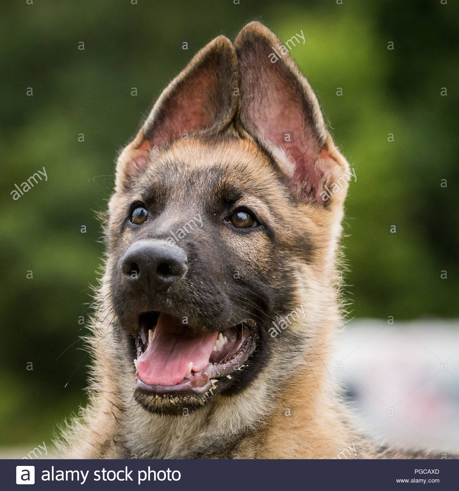

PRINCIPLES OF DOG BREEDING

WHAT IS DOG BREEDING
Dog Breeding is the practice of "Canine reproduction"mating selected dogs with the intent to maintain or produce specific qualities and characteristics.
When dogs reproduce without such human intervention, their offspring's characteristics are determined by natural selection, while "dog breeding" refers specifically to the artificial selection of dogs,
in which dogs are intentionally bred by their owners.
Responsible Dog Breeding is no easy task. There are costs, effort and time to put in; but also big challenges to face.
However once you start, you get addicted. Breeding dogs is a wonderful journey and each puppy from each litter will hold a special place in your heart
BREEDING NATURALLY
For health and behavioral reasons, most authorities recommend that male dogs not be bred until they are at least 1½ years of age, and that female dogs not mate until they are on their second or third heat cycle.
Certain health tests, including hip and elbow dysplasia screening by the Orthopedic Foundation for Animals, cannot be completed until a dog turns two.
Natural matings are usually conducted at the male dog's residence, because taking a male outside of his normal environment can cause insecurity and make his attention wander.
The dogs should be given a private enclosed area with good footing, preferably outside with weather permitting, where they can breed without distraction. Normally, only two handlers should be present, preferably the owners of each dog.
The mating process cannot be rushed. The dogs may need hours or days to become comfortable with each other; this can vary widely based on their experience, disposition and the timing of breeding attempts. Females should be showing obvious signs of estrus,
including flirtation, flagging of her tail and twitching of her vulva. Males should be highly interested in the female, licking her vulva and attempting to mount her if she is ready and willing. The dogs should be supervised at all times to ensure their safety, usually on leash and with the female gently muzzled,
especially if she is a virgin. Talking to the dogs in a soft, encouraging voice can help them feel secure and comfortable. They should never be hollered at out of the owner's frustration.
If a male is having difficulty with penetration, the female dog can be gently moved into place in front of him. A small dab of lubrication, such as K-Y Jelly, on the female's vulva may help, but physical manipulation of the male's genitalia normally does not.
When an inside tie happens, the male will slide his front legs off one side of the female and usually lift one hind leg over her back, so that the two are standing rear-to-rear.
At this time, they are attached, or "tied," by the male's penis swelling up inside and being held by the muscles in the female's vagina. They can stay tied for a long time, with the average being 15 to 45 minutes in most breeds.
Virgin females usually vocalize during the first part of the tie and may need extra comforting and restraint. It is extremely dangerous if the dogs try to separate during a tie before they are physically capable of doing so. Afterwards, the female should not be allowed to urinate for 15 minutes.
The male should be walked until he no longer has an erection and his penis is no longer visible.

For more info, tips, FAQs and guidelines on the principles of dog breeding
Click here